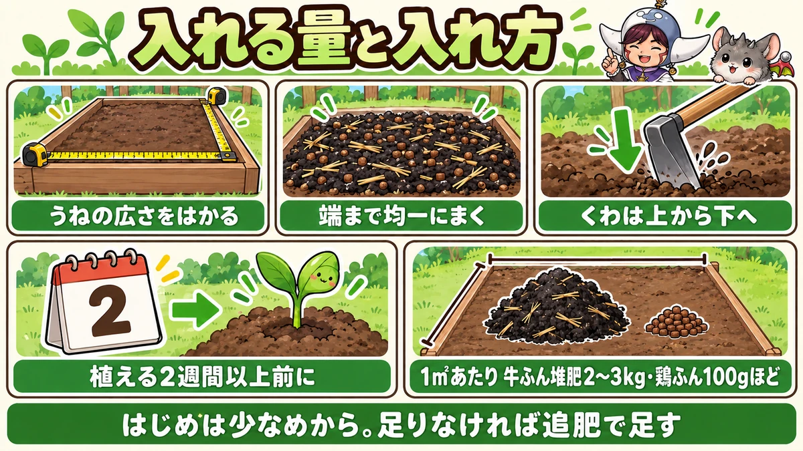

牛ふん堆肥と鶏ふんの違いと使い分けの決定版｜土を作る堆肥と、野菜を育てる肥料。量、入れる時期、入れすぎの失敗まで
📖 この記事の目次
この記事で分かること
- 牛ふん堆肥は、土をふかふかにする「堆肥」です。肥料の成分は少なく、効き目はゆっくりですが、土の水はけや通気をよくし、微生物を増やします。
- 鶏ふんは、野菜を育てる「肥料」です。窒素やりん酸を多く含み、比較的早く効きます。土をふかふかにする力は弱めです。
- 袋の成分表の「C/N比（炭素率）」を見ると、どちらのなかまか分かります。数字が小さいもの（10くらいまで）は肥料、大きいもの（15〜20くらいより大きい）は堆肥と考えます。そのあいだは、両方の働きをもつ中間のなかまです。
- 土づくりでは、牛ふん堆肥で土を作り、鶏ふんで栄養を補う、と組み合わせて使うのが基本です。
- どちらも、入れすぎは失敗のもとです。特に鶏ふんは、入れすぎると栄養が多すぎて野菜が弱くなり、石灰分が多いので土がアルカリ性に傾くこともあります。
- 植える2週間以上前に、畝全体に均一にまいて、土とよく混ぜておきます。
ホームセンターの園芸コーナーに行くと、「牛ふん堆肥」と「発酵鶏ふん」の袋が、並んで山積みになっています。どちらも安く、どちらも動物のふんからできています。けれども、この2つは、畑での役目がまったくちがいます。同じように使うと、土がかえって悪くなったり、野菜がうまく育たなかったりします。
この記事では、牛ふん堆肥と鶏ふんのちがいから、成分表の見方、量の目安、入れる時期と入れ方、追肥での使い方、入れすぎの失敗、保管のしかたまで、順番に書いていきます。
早見：牛ふん堆肥と鶏ふんのちがい
牛ふん堆肥
- なかま：堆肥（土を作るもの）
- 見た目：黒っぽく、しっとりふかふかしている。わらやおがくずが混じっている
- 肥料の成分：少ない。窒素は1%前後
- 効き目：ゆっくり。土の中で何年もかけて分解される
- 主な役目：土をふかふかにする、水はけと水持ちをよくする、微生物を増やす
- 使う時期：植える2週間以上前の土づくり
- 量の目安：1㎡あたり2〜3kgほど
鶏ふん（発酵鶏ふん）
- なかま：肥料（野菜を育てるもの）
- 見た目：茶色っぽい粒や粉。さらさらしている
- 肥料の成分：多い。窒素3〜4%、りん酸も多い。石灰分（カルシウム）も多く含む
- 効き目：比較的早い。暖かい時期なら1か月ほどで切れてくる
- 主な役目：野菜に栄養を与える
- 使う時期：植える前の元肥と、育ってからの追肥
- 量の目安：元肥で1㎡あたり100〜200gほど（袋の表示に従う）
ひとことで言うと
牛ふん堆肥は「土のごはん」、鶏ふんは「野菜のごはん」です。土のごはんで土を元気にし、野菜のごはんで野菜を育てる、と考えると、使い分けが分かりやすくなります。

量をはかるこつ
まず、畝の広さを知る
量の目安は「1㎡あたり」で書かれていることが多いので、まず畝の広さを知ります。畝の長さと幅をメジャーではかり、かけ算します。たとえば、長さ3m、幅1mの畝なら3㎡です。
袋の重さから考える
牛ふん堆肥の袋には、重さや容量が書いてあります。たとえば20kgの袋なら、1㎡に2〜3kgとして、7〜10㎡ぶんくらいになります。袋ごと何袋使うかの目安になります。
一度、はかりで量っておく
バケツや計量カップに入れた牛ふん堆肥や鶏ふんが、何kg、何gになるかを、一度だけ台所のはかりなどで量っておくと、次からは「バケツ何杯」「カップ何杯」で、だいたいの量が入れられるようになります。堆肥は、湿り気によって同じかさでも重さが変わるので、だいたいの目安と考えます。
少なめから始める
はじめての畑や、はじめて使う商品では、目安の量より少なめから始め、野菜の育ちを見ながら、次の作付けで加減します。入れすぎたものを取り出すことはできませんが、足りなければ追肥で足すことができます。
堆肥と肥料のちがい
堆肥は、土を作るもの
堆肥は、わらや落ち葉、家畜のふんなどの有機物を、積んで発酵させたものです。土に入れると、微生物のえさになり、微生物が増えることで、土の中に小さな粒のかたまり（団粒）ができます。団粒の土は、すき間が多く、水はけと水持ち、空気の通りのバランスがよく、根が張りやすい土になります。堆肥は、野菜に直接栄養を与えるというより、野菜が育ちやすい土を作るためのものです。
肥料は、野菜を育てるもの
肥料は、野菜が育つのに必要な栄養（窒素、りん酸、カリなど）を与えるものです。土に入れると、比較的早く溶けて、根から吸われます。肥料は、土をふかふかにする働きは、あまりありません。
両方が必要
野菜をよく育てるには、堆肥で根が張りやすい土を作り、肥料で栄養を与える、の両方が必要です。堆肥だけでは栄養が足りず、肥料だけでは土がかたくなっていきます。人の食事にたとえると、肥料は肉や魚、堆肥は野菜や繊維のようなもので、どちらかだけでは体の調子が整わないのと同じです。
成分表の見方
窒素、りん酸、カリ
袋には、窒素、りん酸、カリが、それぞれ何%入っているかが書いてあります。
- 窒素：葉や茎を育てる
- りん酸：花や実をつける、根を伸ばす
- カリ：根を育て、株を丈夫にする
数字が大きいほど、その栄養が多く入っています。
C/N比（炭素率）
成分表には、「C/N比」または「炭素率」という数字が書いてあることがあります。これは、中に含まれる炭素と窒素の割合です。
- C/N比が小さい（10くらいまで）：窒素が多く、分解が速い。肥料としてよく効く。鶏ふんはこのなかま
- C/N比が大きい（15〜20くらいより大きい）：炭素が多く、分解がゆっくり。土をふかふかにする働きが強い。牛ふん堆肥はこのなかま
- そのあいだ（10〜15くらい）：肥料と堆肥の中間。豚ぷんはこのあたり
C/N比を見れば、その袋が「肥料」として使うものか、「堆肥」として使うものかが分かります。
同じ名前でも、成分はちがう
同じ「鶏ふん」「牛ふん堆肥」でも、作っているところや作り方によって、成分はかなりちがいます。わらやおがくずの混ぜ方、発酵のさせ方などで変わるからです。使う前に、必ず袋の成分表を確かめます。
書いていない成分もある
鶏ふんには、窒素、りん酸、カリのほかに、石灰分（カルシウム）やマグネシウムも多く含まれています。量が一定より少ない成分は表示しなくてよい決まりもあり、袋に書いていない場合もありますが、鶏ふんは石灰分を多く含むもの、と覚えておきます。
牛ふん堆肥の使い方
選びかた
よく発酵が進んだ牛ふん堆肥は、黒っぽく、さらさらとして、いやなにおいがほとんどしません。べとべとしていて、強いにおいがするものは、発酵が足りないことがあります。袋の上から押してみて、しっとりふかふかしているものを選びます。
量の目安
1㎡あたり2〜3kgほどが目安です。はじめて畑にする場所や、土がかたい場所では、最初の年は少し多めに入れ、2年目、3年目と、土がよくなるにつれて少しずつ減らしていきます。
時期
植える2週間以上前までに入れて、土とよく混ぜておきます。土の中で落ち着く時間をとることで、植えたあとに根を傷める心配が少なくなります。
入れ方
- 畝を作る場所に、目印の線を引きます
- 牛ふん堆肥を、畝の端から端まで、均一にまきます。真ん中にかたまらないように、畝の端にもしっかりまきます
- くわやスコップで、土とよく混ぜます
くわは、上から下へ
くわで耕すときは、くわを上から振り下ろして土に打ちこみ、そのまま土をくだくように使います。くわを手前に引いたり、横に動かしたりすると、せっかく均一にまいた堆肥が、片寄ってしまいます。
なぜ、畝の端までまくのか
野菜の根は、植えてから1か月もすると、株元から畝の端のほうまで伸びていきます。真ん中にだけ堆肥や肥料をまくと、はじめは育ちがよくても、根が伸びた先に栄養がなく、あとで育ちが止まりやすくなります。
入れすぎない
牛ふん堆肥は、肥料の成分は少ないとはいえ、ゼロではありません。毎年たくさん入れ続けると、分解しきれなかったぶんが土にたまり、栄養が多すぎる土になってしまいます。余ったからと袋ごと全部入れたりせず、目安の量を守ります。
発酵の足りないものに注意
牛ふんには、牛が食べた草のタネが、消化されないまま残っていることがあります。十分に発酵させて熱が上がった堆肥なら、タネは死んでいますが、発酵が足りない堆肥だと、畑に雑草のタネをまくことになりかねません。また、発酵の足りない堆肥は、土の中で分解が進むときに根を傷めたり、大根やにんじんの根が分かれる原因になったりします。よく発酵した、においの少ないものを選びます。
同じ堆肥ばかり使い続けない
牛ふん堆肥はすぐれた土づくりの材料ですが、毎年同じものばかり使い続けるより、ときにはバーク堆肥や腐葉土など、別の堆肥と替えて使うと、土の中の微生物の種類が豊かになる、という考え方もあります。毎年いろいろな堆肥を入れている畑では、牛ふん堆肥の量は目安の半分くらいでも十分です。

鶏ふんの使い方
発酵したものを選ぶ
鶏ふんには、発酵させたもの（発酵鶏ふん）、乾燥させただけのもの、焼いたものなどがあります。家庭菜園では、においが少なく扱いやすい、発酵鶏ふんがよく使われます。
粒と粉
市販の鶏ふんの多くは、粒（ペレット）の形をしています。粒の大きいものは、ゆっくり分解して効いていきます。粉のものは、早く効きます。粒のものは、まきやすく、風で飛びにくいのも良いところです。
元肥として
植える前の土づくりのとき、牛ふん堆肥といっしょに、畝全体に均一にまいて、土とよく混ぜます。量は、1㎡あたり100〜200gほどが目安ですが、商品によって成分がちがうので、袋の表示を確かめます。とうもろこしや里芋など、肥料をたくさん使う野菜は、少し多めにします。
追肥として
育ってからの追肥にも使えます。株から少し離れたところに、株を囲むように円を描いてまき、土と軽く混ぜるか、上から土をかぶせます。
表面に残さない
鶏ふんを土の表面にまいたままにしておくと、においで虫が寄ってくることがあります。元肥のときはよく混ぜこみ、追肥のときも土をかぶせて、表面に見えないようにします。
実のなる野菜に向いている
鶏ふんは、りん酸を多く含むので、トマト、なす、ピーマン、きゅうりなど、実のなる野菜によく合う肥料です。また、石灰分（カルシウム）も含むので、カルシウムが足りないときに出るトマトの尻腐れ（実のおしりが黒くなる症状）の予防にも役立つ、とされます。
鶏ふんの種類
生の鶏ふんは使わない
鶏小屋から出たばかりの生の鶏ふんには、病原菌や、根を傷めるアンモニアなどが多く含まれています。そのまま畑に入れると、野菜が病気になったり、枯れたりすることがあります。家庭菜園では、発酵や乾燥の処理をした市販品を使います。
安い発酵鶏ふん
ホームセンターで安く売られている発酵鶏ふんの多くは、発酵と乾燥の処理をして、病原菌を減らしたものです。ただ、アンモニアが少し残っていることがあり、独特のにおいがします。入れてすぐに植えると、土の中で出るガスで根を傷めることがあるので、入れてから2週間ほどあけて植えます。
よく発酵させた鶏ふん
もみ殻やおがくずなどを混ぜて、時間をかけてよく発酵させた鶏ふんは、においが少なく、肥料の効き目に加えて、土をふかふかにする働きも少しあります。値段はやや高めです。
焼いた鶏ふん
鶏ふんを高い温度で焼いたもの（炭化鶏ふんなど）もあります。焼くことで、においがなくなり、病原菌もいなくなります。窒素は減りますが、りん酸やカリ、石灰分が多くなります。アルカリ性が強いので、入れすぎに気をつけます。
鶏ふんで追肥をするときの手順
育ちはじめのころ
- 株を中心に、少し離れたところに、ぐるりと円を描くように鶏ふんをまきます
- 量は、1株あたりひとつかみ弱くらいから。袋の表示を目安にします
- 上から薄く土をかぶせるか、軽く土と混ぜます
株全体の根に、まんべんなく肥料が行きわたります。
株が大きくなってから
株が大きくなって葉が広がると、株のまわりに円を描くのは難しくなります。株と株のあいだや、畝の肩のあたりを、移植ごてで浅く掘り、そこに鶏ふんを入れて、土を戻します。
浅く入れる
鶏ふんの追肥は、深く埋めるより、浅く入れるほうが安心です。深く埋めると、分解のときに出るガスが逃げにくく、根を傷めることがあります。浅く入れても、雨や水やりで、肥料分は少しずつ下へしみこんでいきます。
マルチをしているとき
マルチの植え穴から、または株から少し離れたところのマルチに移植ごてで穴をあけて、鶏ふんを入れ、土で埋め戻します。入れたあとに水をやると、肥料が早く土になじみます。
牛ふん堆肥と鶏ふんの組み合わせかた
基本の組み合わせ
植える前の土づくりでは、牛ふん堆肥で土を作り、鶏ふんで栄養を足します。たとえば、1㎡あたり、牛ふん堆肥を2〜3kg、鶏ふんを100gほど、を目安に、植える2週間以上前に混ぜておきます。
はじめて畑にする場所では
これまで畑として使っていなかった場所や、土がかたく締まった場所では、最初の年は牛ふん堆肥を目安より多めに入れ、深めに耕して、土をほぐします。2年目、3年目と、土の様子を見ながら量を減らしていきます。
土がよくできている畑では
何年も堆肥を入れて土がふかふかになっている畑では、牛ふん堆肥を減らしたり、その年は入れずに、鶏ふんだけで元肥にしたりすることもあります。
土がかたい畑、砂っぽい畑では
土がかたい畑、雨で肥料が流れやすい砂っぽい畑、土の粒のかたまりができていない畑では、牛ふん堆肥をしっかり入れます。こうした畑で鶏ふんだけを使っても、土はふかふかにならず、肥料もすぐに流れてしまいます。
追肥の組み立て
元肥で入れた鶏ふんの効き目は、暖かい時期なら1か月ほどで切れてきます。夏野菜なら、実がつきはじめたころから、2〜3週間ごとに鶏ふんを少しずつ追肥していきます。秋冬野菜なら、植えつけから2週間ほどで1回目、その後は育ちを見ながら月に1回くらいが目安です。牛ふん堆肥は、追肥にはほとんど使いません。
同じ畑で続けるとき
春夏と秋冬で続けて野菜を育てる畑では、前の野菜の肥料が残っていることがあります。前の野菜がよく育っていて、葉の色も濃かったなら、次の元肥は控えめにします。
ほかの肥料との組み合わせ
油かすは窒素が多い肥料で、葉物野菜によく合います。ただ、トマトなどは、はじめに窒素が多すぎると、葉ばかり茂って実がつきにくくなるので、夏野菜には、鶏ふんを中心にするほうが向いています。鶏ふんはカリが少なめなので、カリを足したいときは、草木灰を少し混ぜる方法もあります。
植える前の土づくりの手順
1. 草や前の野菜の根を片づける
畝を作る場所の草や、前に育てた野菜の太い根などを取り除きます。
2. 牛ふん堆肥と鶏ふんをまく
畝を作る範囲に、牛ふん堆肥と鶏ふんを、端から端まで均一にまきます。2つをあらかじめバケツで混ぜてからまくと、ムラが少なくなります。
3. 耕して混ぜる
くわを上から振り下ろすように使い、土と堆肥、肥料をよく混ぜます。深さ20〜30cmくらいまで混ざるようにします。
4. 乾いていたら水をやる
土がからからに乾いているときは、混ぜたあとに水をまいておくと、微生物が働きはじめ、堆肥や肥料が早く土になじみます。
5. 2週間以上おいてから畝を立てて植える
土が落ち着いたら、畝を立て、必要ならマルチを張って、植えつけます。
石灰を使うときは
土の酸性が強く、石灰を入れる場合は、鶏ふんに石灰分が多いことを考えて、石灰の量を控えめにします。
入れすぎの失敗
鶏ふんを、堆肥のつもりでたくさん入れた
鶏ふんは、名前に「発酵」とついていて、堆肥の売り場に並んでいることもあるため、堆肥と思われがちです。けれども、栄養が多い肥料なので、牛ふん堆肥と同じ感覚でたくさん入れると、栄養が多すぎて、野菜がひょろひょろとやわらかく育ちます。やわらかく育った野菜は、病気や虫の害を受けやすくなります。
石灰と鶏ふんを、両方たっぷり入れた
鶏ふんには石灰分が多く含まれています。土づくりのときに、苦土石灰などの石灰をいつもどおり入れ、さらに鶏ふんもたっぷり入れると、石灰分が多くなりすぎて、土がアルカリ性に傾くことがあります。石灰分が多すぎると、ほかの栄養の吸われ方のバランスも崩れ、野菜がうまく育たなくなります。鶏ふんを使うときは、石灰を控えめにします。
じゃがいもに、石灰と鶏ふんを入れた
じゃがいもは、弱い酸性の土を好む野菜です。土がアルカリ性に傾くと、芋の表面がかさぶたのようになる「そうか病」が出やすくなります。じゃがいもの畑では、石灰は入れないか、ごく少なめにし、鶏ふんも入れすぎないようにします。土の酸度を測って、もともと酸性が強くなければ、石灰は必要ありません。
牛ふん堆肥を、毎年たっぷり入れ続けた
牛ふん堆肥は、分解に何年もかかるので、毎年たくさん入れ続けると、少しずつ栄養が土にたまっていきます。数年たって、葉ばかり茂る、虫が多いと感じたら、堆肥の量を見直します。
畝の真ん中にだけまいた
はじめは育ちがよくても、根が伸びた先に栄養がなく、あとで育ちが止まりやすくなります。畝の端まで均一にまきます。
くわを手前に引いて耕した
均一にまいた堆肥や肥料が、手前に寄って片寄ってしまいます。くわは上から振り下ろして使います。
鶏ふんを入れて、すぐに植えた
土の中で出るガスで、植えたばかりの苗の根が傷むことがあります。入れてから2週間ほどあけて植えます。

保管のしかた
買うときに袋を確かめる
売り場で、雨ざらしになって袋に水がたまっているもの、袋が破れているものは避けます。中身が湿っていると、家に持ち帰ってからもにおいやかびが出やすくなります。
雨にぬらさない
牛ふん堆肥も鶏ふんも、雨にぬれると、かたまったり、かびが生えたりします。鶏ふんは、ぬれると発酵が始まって、においも強くなり、栄養が流れ出してしまいます。袋の口をしっかり閉じ、雨の当たらない場所に置きます。ふたのできる容器に移しておくと安心です。
使いきれる量を買う
牛ふん堆肥は、主に土づくりのときにしか使わないので、家庭菜園の広さなら、大袋をたくさん買う必要はありません。使いきれない量を買うと、保管に困ります。
においがするのは、湿っているしるし
鶏ふんから強いにおいがするときは、湿気を吸っていることが多いものです。買うときも、売り場で雨にぬれていた袋は避けます。
残った袋の使い道
牛ふん堆肥
使いきれなかった牛ふん堆肥は、袋の口を閉じて雨の当たらない場所に置いておけば、次の土づくりに使えます。株元に薄く敷いて、乾燥よけや泥はねよけにする使い方もあります。プランターの古い土を再生するときに、少し混ぜるのもよい方法です。
鶏ふん
鶏ふんは、元肥だけでなく追肥にも使えるので、少しずつ使いきっていけます。湿気を吸うとかたまりやすいので、口をしっかり閉じ、乾いた場所に置きます。かたまってしまったものは、くだいてから使います。
季節で変わる効きかた
暖かい時期は、早く効いて早く切れる
春から夏の暖かい時期は、土の中の微生物がよく働くので、鶏ふんは比較的早く効きはじめ、1か月ほどで効き目が切れてきます。夏野菜は、効き目が切れるころに追肥をして、栄養を切らさないようにします。
寒い時期は、ゆっくり効く
秋から冬は、気温が下がるにつれて微生物の働きがにぶくなり、鶏ふんも牛ふん堆肥も、分解がゆっくりになります。鶏ふんの効き目が出るまでに時間がかかり、そのぶん長く効きます。秋冬野菜の土づくりは、寒くなる前に早めにすませ、追肥も早めに行います。
冬の土づくり
冬のあいだに、春の作付けに向けて牛ふん堆肥を入れておく方法もあります。寒いあいだにゆっくり分解が進み、春には土になじんでいます。
野菜ごとの使い分け
トマト、なす、ピーマン、きゅうり
土づくりで牛ふん堆肥を入れ、元肥と追肥に鶏ふんを使うのが合っています。トマトは、はじめに肥料が多すぎると実がつきにくいので、元肥は控えめにし、実がつきはじめてから追肥で補います。
とうもろこし、里芋
肥料をたくさん使う野菜です。牛ふん堆肥でしっかり土を作り、鶏ふんも少し多めにします。
キャベツ、白菜、ブロッコリー
牛ふん堆肥と鶏ふんで土を作ります。葉を大きく育てる野菜なので、窒素の多い油かすを少し組み合わせてもかまいません。
じゃがいも
石灰と鶏ふんの入れすぎに気をつけます。牛ふん堆肥で土を作り、肥料は控えめにします。
大根、にんじん
未熟な堆肥や、かたまった肥料が根に当たると、根が分かれたり曲がったりします。堆肥はよく発酵したものを使い、植える（まく）2週間以上前に、土とよく混ぜておきます。
玉ねぎ、にんにく
植える前に牛ふん堆肥と鶏ふんで土を作ります。冬のあいだの追肥は、鶏ふんなどの有機の肥料なら1月末ごろまでにすませます（速く効く化成肥料なら、早生は2月中旬、中生・晩生は3月上旬ごろまで）。春に暖かくなってから追肥をしすぎると、病気が出やすくなったり、玉の太りが悪くなったりします。
いちご
植える前に、牛ふん堆肥でふかふかの土を作り、鶏ふんを控えめに元肥として入れます。いちごの根は肥料に弱いので、植える直前に入れず、2週間以上前に入れておきます。
えだまめ、落花生などの豆
豆のなかまは、根に住む菌が空気中の窒素を取りこむので、肥料は控えめにします。鶏ふんを入れすぎると、葉ばかり茂って実がつきにくくなります。
季節ごとにやること（一般的な地域の目安）
- 2〜3月：春夏野菜の土づくり。植える2週間以上前に牛ふん堆肥と鶏ふんを入れる
- 4〜5月：夏野菜の植えつけ。実がつきはじめたら鶏ふんで追肥
- 6〜8月：夏野菜の追肥。2〜3週間ごとに鶏ふんを少しずつ
- 8〜9月：秋冬野菜の土づくり。牛ふん堆肥と鶏ふんを入れる
- 9〜11月：秋冬野菜の追肥。寒くなると鶏ふんも効くのが遅くなるので、早めに
- 12〜1月：使い残しの堆肥や肥料を、ぬれない場所で保管
説明が分かれるところ
鶏ふんは、土づくりに使ってよいか
鶏ふんは肥料なので、土づくり（堆肥）の代わりにはならない、という説明が多く見られます。一方で、鶏ふんにも微生物を増やす働きが少しはある、という説明もあります。どちらにしても、土をふかふかにしたいなら、牛ふん堆肥などの堆肥を入れ、鶏ふんは栄養を補うものとして使うのが確実です。
牛ふん堆肥で、土の酸性はやわらぐか
牛ふん堆肥は、中性から弱いアルカリ性のものが多く、雨で酸性に傾いた土を、少しやわらげる働きがある、と説明されることがあります。ただ、その働きはおだやかなので、酸性の強い土をはっきり直したいときは、土の酸度を測って、石灰で調整するほうが確実です。
じゃがいもに、鶏ふんは使ってよいか
石灰分が多く、そうか病のもとになるので、じゃがいもには鶏ふんを使わないほうがよい、という説明があります。一方で、土の酸度を測って、酸性が保たれていれば、鶏ふんを使っても問題なく育つ、という人もいます。心配なら、土の酸度を測ってから使うか、石灰分の少ない肥料を選びます。
鶏ふんの量は、袋の表示どおりで足りるか
袋に書いてある量は少なめで、実際にはもう少し多く入れてもよい、という声もあります。一方で、入れすぎると栄養が多すぎたり、石灰分が多くなりすぎたりする心配があります。はじめは袋の表示どおりにして、野菜の育ちや葉の色を見ながら、次の作付けで加減していくのが安全です。
よくある質問
牛ふん堆肥と鶏ふん、どちらか1つだけ買うならどちらですか
土をこれから作る畑なら牛ふん堆肥、すでに土がよくできていて栄養だけ足したいなら鶏ふんです。はじめて畑をする場合は、両方そろえるのがおすすめです。
牛ふん堆肥を入れて、すぐに植えてもいいですか
よく発酵したものなら、すぐに植えても大きな問題はないことが多いですが、植える2週間以上前に入れて、土になじませておくほうが安心です。
牛ふん堆肥と鶏ふんを、混ぜて保管してもいいですか
まく直前に混ぜるのはかまいませんが、混ぜたまま長く保管するのは避けます。湿り気のある牛ふん堆肥と鶏ふんを混ぜて置いておくと、鶏ふんが湿気を吸って発酵が始まり、においが出たり、かたまったりします。別々に保管して、使うときに混ぜます。
牛ふん堆肥は、何年くらいで土になじみますか
牛ふん堆肥は、土の中でゆっくり分解され、数年かけて土になじんでいきます。1年で土が劇的に変わるわけではないので、毎年少しずつ入れて、3年くらいの長い目で土を育てていくつもりで使います。
鶏ふんのにおいが気になります
発酵の進んだものほど、においは少なくなります。まいたあとは、すぐに土と混ぜるか、土をかぶせると、においがおさまります。
ベランダで、においが気になります
プランターで鶏ふんを使うと、においが近所に届くことがあります。においの少ない、よく発酵したものや、焼いたものを選び、まいたらすぐに土をかぶせます。それでも気になる場合は、においのない化成肥料や、市販の液肥を使う方法もあります。
鶏ふんを入れすぎてしまいました。どうすればいいですか
まだ植えていなければ、植えるのを少し遅らせ、別の土や牛ふん堆肥を足してよく混ぜ、肥料の濃さを薄めます。土が乾いているときに水をたっぷりまいて、なじませておきます。すでに植えてある場合は、追肥をしばらくやめ、葉の色や育ちの様子を見ます。
プランターでも使えますか
使えます。ただ、プランターは土の量が少なく、肥料が効きすぎやすいので、鶏ふんはごく少なめにします。市販の培養土には、はじめから肥料が入っていることが多いので、袋の表示を確かめてから足します。
バーク堆肥や腐葉土とは、どうちがいますか
バーク堆肥は木の皮を、腐葉土は落ち葉を発酵させたものです。どちらも牛ふん堆肥よりさらに肥料の成分が少なく、土をふかふかにする働きが中心です。牛ふん堆肥は、肥料の成分も少し含むので、土づくりと栄養の両方に少しずつ役立ちます。
堆肥を入れたら、雑草が増えた気がします
発酵が足りない堆肥に、雑草のタネがまじっていた可能性があります。よく発酵した堆肥を選びます。また、堆肥で土がよくなると、雑草もよく育つようになります。草は小さいうちに取ります。
馬ふん堆肥や豚ぷんは、どうちがいますか
馬ふん堆肥は、牛ふん堆肥と同じく、土をふかふかにする堆肥のなかまです。豚ぷんは、牛ふん堆肥と鶏ふんの中間くらいで、牛ふん堆肥より肥料の成分が多めです。成分表のC/N比を見て、堆肥として使うか、肥料として使うかを判断します。
学ぶ：土の中で起きていること🔬
なぜ、牛ふん堆肥は土をふかふかにするのか
牛は草を食べる動物なので、牛ふんには、草の繊維がたくさん残っています。牛ふん堆肥を土に入れると、この繊維を、土の中の微生物がゆっくり分解していきます。そのとき微生物が出すねばねばした物質が、土の細かい粒どうしをくっつけ、小さなかたまり（団粒）を作ります。団粒の土は、かたまりとかたまりのあいだに大きなすき間があり、そこを水と空気が通ります。かたまりの中の小さなすき間には、水がたくわえられます。これが、水はけも水持ちもよい、ふかふかの土の正体です。
なぜ、鶏ふんは肥料としてよく効くのか
鶏は、穀物などの栄養の多いえさを食べ、ふんと尿をいっしょに出します。そのため、鶏ふんには、窒素やりん酸が多く含まれています。また、繊維が少ないので、土の中で早く分解され、栄養が溶け出して根に届きます。C/N比が小さいのは、窒素が多く、炭素（繊維）が少ないからです。
なぜ、C/N比で働きが変わるのか
土の中の微生物は、有機物の炭素をエネルギーに、窒素を体を作る材料にして増えます。C/N比が小さい鶏ふんは、窒素がたっぷりあるので、微生物はすぐに分解を進め、余った窒素が野菜の栄養として出てきます。C/N比が大きいものは、窒素が少ないので、分解はゆっくり進み、そのあいだ微生物が土の中でねばねばした物質を出して、土をふかふかにしていきます。C/N比があまりに大きいものを大量に入れると、微生物が土の中の窒素まで使ってしまい、野菜の分が足りなくなることもあります。
なぜ、発酵させてから使うのか
家畜のふんを発酵させると、微生物の働きで、山の中の温度がとても高くなります。この熱で、病原菌や雑草のタネ、虫の卵などが死にます。また、においのもとや、根を傷める物質も分解されます。発酵が足りないまま土に入れると、土の中で分解が始まり、そのときに出る熱やガスが根を傷めてしまいます。堆肥も鶏ふんも、よく発酵させたものを使い、さらに植える前に土の中で落ち着く時間をとるのは、このためです。
なぜ、鶏ふんには石灰分が多いのか
鶏は、卵のからを作るために、えさからたくさんのカルシウムを取りこみます。えさに貝がらなどのカルシウムが混ぜられていることも多く、ふんにもカルシウムが多く残ります。鶏ふんに石灰分が多いのは、このためです。
まとめ
ここまで読んでくださって、ありがとうございます！
牛ふん堆肥と鶏ふんのポイントを、もう一度まとめておきます。
- 牛ふん堆肥は土を作る「堆肥」。肥料の成分は少なく、ゆっくり効く。1㎡あたり2〜3kgが目安
- 鶏ふんは野菜を育てる「肥料」。窒素やりん酸が多く、比較的早く効く。石灰分も多い
- C/N比が小さいものは肥料、大きいものは堆肥
- 植える2週間以上前に、畝の端まで均一にまき、くわは上から下へ
- 鶏ふんを使うときは石灰を控えめに。じゃがいもは特に注意
- どちらも入れすぎない。雨にぬらさずに保管する
- 量は畝の広さをはかり、袋の重さや、一度はかりで量った目安から考える。少なめから始める
- 寒い時期は、どちらもゆっくり効く。秋冬野菜の土づくりと追肥は早めに
次の土づくりでは、袋の裏の成分表とC/N比を、ぜひ一度読んでみてください。それだけで、どれをどれだけ入れればいいかが、ぐっと分かりやすくなります🌱
牛ふん堆肥
土をふかふかにする堆肥。植える2週間以上前に、1㎡あたり2〜3kgを目安に畝全体へ均一にまいて混ぜます。
![[商品価格に関しましては、リンクが作成された時点と現時点で情報が変更されている場合がございます。]](https://hbb.afl.rakuten.co.jp/hgb/55e75fe5.20db4cd1.55e75fe7.d1ec32cc/?me_id=1194164&item_id=10000517&pc=https%3A%2F%2Fthumbnail.image.rakuten.co.jp%2F%400_mall%2Fgardening%2Fcabinet%2Fhiryousennyouhiryo%2Fdsc_2803.jpg%3F_ex%3D240x240&s=240x240&t=picttext "[商品価格に関しましては、リンクが作成された時点と現時点で情報が変更されている場合がございます。]")

鶏ふん
野菜を育てる肥料。元肥にも追肥にも。石灰分が多いので、石灰は控えめにします。
![[商品価格に関しましては、リンクが作成された時点と現時点で情報が変更されている場合がございます。]](https://hbb.afl.rakuten.co.jp/hgb/55e7612a.7de1526b.55e7612b.01a50904/?me_id=1214866&item_id=10002182&pc=https%3A%2F%2Fthumbnail.image.rakuten.co.jp%2F%400_mall%2Fkaju%2Fcabinet%2F00714580%2F03462454%2F07486601%2Fimgrc0071643813.jpg%3F_ex%3D240x240&s=240x240&t=picttext "[商品価格に関しましては、リンクが作成された時点と現時点で情報が変更されている場合がございます。]")
くわ
上から振り下ろして土をくだき、堆肥と肥料を片寄らせずに混ぜこみます。
![[商品価格に関しましては、リンクが作成された時点と現時点で情報が変更されている場合がございます。]](https://hbb.afl.rakuten.co.jp/hgb/56d752c3.3ce6fd3b.56d752c4.f8896826/?me_id=1209220&item_id=10002030&pc=https%3A%2F%2Fthumbnail.image.rakuten.co.jp%2F%400_mall%2Fhonmamon-r%2Fcabinet%2Fimg3%2Fw4580149745643.jpg%3F_ex%3D240x240&s=240x240&t=picttext "[商品価格に関しましては、リンクが作成された時点と現時点で情報が変更されている場合がございます。]")
次に読む
記事一覧へ